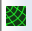
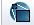
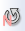
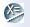

Visualizing data in the IRSA/PTF Image Service
xxx Replace with PTF
Once a search is complete, the lower portion of the NWIS window
is populated with a row of four images - the WISE images from each
band with wavelength increasing from left to right. These display
windows appear as a standard size of 350 x 350 arcsec. Smaller returned
images will appear as an inset within this window, and larger images
will initially only have the central 350 x 350 arcsec displayed.
Note that because WISE band 4 has a resolution of 12 arcsec rather
than 6 arcsec due to the small telescope aperture, the band 4 images are
binned by a factor of two.
Clicking on the red and green frame icon in the image corner
will display it at full size in a separate window and launch the
Visualization Tools toolbar enabling manipulation of the image.
Note that the sky coverage of the WISE image with respect to the IRAS 100 micron
map is shown in the upper left hand corner under the "Coverage" tab. A
neighboring tab displays a 3 color composite of the WISE 3.3 (blue),
4.5 (green), and 12 micron (red) images.
The WISE images can be downloaded by selecting WISE sources
from the search results table and clicking the "Download Options" button,
Visualization Tools
All of the interactive image visualization tools work the same basic
way, and here we describe these basic options, in basically the order
in which they appear in the window, from top to bottom, left to
right.
- Interactive exploration of the image with the mouse.
- Move your
mouse over any imager. A pop-up window appears in the upper right han, and some information is updated in real time (such as
coordinates); some information (such as DN) is updated
when you stop moving your mouse for a second or two. The image can be
interactively investigated in this fashion. You can change the
direction in which the pop-up window appears; see the arrow icon (
 ) below.
) below.
- Finding out what the image is that is displayed.
- The top of the window pane (just under the tab headings) gives a
title of the image, which will be WISE band 1 - 4. Note that you can
eliminate the preview image of any band by unclicking the box for
the unwanted band in the "Preview" pane on the right side of the page.
Also in this area, there is the ability to display the positions of
sources affected by image artifacts. The different types of artifacts
are displayed using different symbols and colors. The "Layers" tool
on the Visualization Tools menu lists the colors for the artifacts.
Note that artifact flagging will be improved in the final release
of the WISE data. It is rather primitive in the Preliminary Release,
especially for the individual image frames.
 Breaking the image out of the pane.
Breaking the image out of the pane.
- This icon will pull the corresponding visualization window out into a
pop-up window. This enables you to look at more than one
visualization window at a time. These images can be moved around by
clicking on and dragging the dark bar at the top of the image. They
can be resized by clicking on and dragging the extreme bottom right corner.
 Saving the FITS file.
Saving the FITS file.
- The diskette icon will download the current background FITS image
to your local disk. Note that you control where the image is
saved on your disk through your browser; your browser may be
configured to store all downloads in a particular location on your
disk.
 Changing the color table.
Changing the color table.
- Click on the colorful icon to change the color table of the
background image. A wide variety of color table choices appear when
you click the button, and you can select your new color table.
- Changing the color table stretch.
- Click on this icon to change the specific stretch of the color table
to be one of several pre-defined standard options.
 Customizing the color table stretch.
Customizing the color table stretch.
- Click on this icon to customize the specific stretch of the color
table. A pop-up window appears with a histogram of the colors, and
you can interactively change and customize the stretch of the data as
displayed.
- Viewing the FITS header.
- This icon
will display a pop-up window with the FITS header of the background
image. You can use this option to view the FITS header of a WISE
data product via the L1/L2 Data tab.
- Changing the location of the interactive
readout.
- You can interactively explore the image by moving
the mouse (see above). Clicking on this icon changes the direction in
which the pop-up window appears. By default, the readout attempts to
appear generally to the right of the visualized image. Clicking once
changes the arrow to pointing down, and the readout attempts to appear
generally below the visualized image, and similarly for additional
clicks and additional directions.

- This is not actually clickable, but is instead letting you know
the magnification factor for the image as displayed. To zoom, see the
zoom icons below. Note that there is a maximum zoom allowed -- 64
times. To enlarge things more than that, please select another
background image, one of smaller spatial extent.
 Getting help.
Getting help.
- Clicking on this icon
takes you to this help page.
- Locking or changing the background
image.
- You can lock the background image or change it to be
something else by clicking on this image.
The next part of this window has a series of tabs: ISSA/IRIS
(which is IRAS -- 12, 25, 60, and 100 microns), 2MASS (J, H, and Ks
bands, or 1.25, 1.65, and 2.17 microns), MSX (8.28, 12.13, 14.65, and
21.3 microns), DSS (the usual red/blue plates and a variety of scan
options), a FITS file from your local disk, or a URL that you can
enter so the browser can retrieve a FITS file from the web. From this
pop-up, you can also choose to create a 3-color image, loading a new
FITS file separately for each color plane.
 Zooming in or out.
Zooming in or out. -
Clicking on these magnifying glass icons zooms you in or out of the
image (or spectrum). The readout of how many times you are zoomed
appears at the top of the visualization window. Note that there is a
maximum zoom allowed -- 64 times. To enlarge things more than that,
please select another background image, one of smaller spatial
extent.
-  Adding a coordinate grid.
- Click on this
icon to overlay a coordinate grid on the image. Click it again to
remove it.
 Selecting a region.
Selecting a region.
- When you
click this icon, at first, nothing seems to happen. However, you can
now click and drag in the image, selecting a box on the image. This
box can be resized by grabbing and dragging the corners of the box.
When you have selected a region of the image, additional icons appear
above the image. These icons will allow you to crop the image to the
selected region () or obtain statistics on the
region (
 ). Statistics include mean pixel values
in the selected area, standard deviation, integrated
DN, position and value of DN maximum and minimum,
aperture centroid, and DN weighted centroid position.
Note that the WISE image pixel values are in units of DN and not absolute surface
brightness. They are designed for relative measurement
using the zero point information in the headers.
Please see Section I.4.c.iv of
Explanatory Supplement to the WISE Preliminary Data Release Products
for more details.
). Statistics include mean pixel values
in the selected area, standard deviation, integrated
DN, position and value of DN maximum and minimum,
aperture centroid, and DN weighted centroid position.
Note that the WISE image pixel values are in units of DN and not absolute surface
brightness. They are designed for relative measurement
using the zero point information in the headers.
Please see Section I.4.c.iv of
Explanatory Supplement to the WISE Preliminary Data Release Products
for more details.
-  Rotating the image so that North is
up.
- Images that you download from IRAS or DSS or 2MASS commonly
are already oriented such that North is up. However, when
interactively investigating single frame WISE products, North is not necessarily
up. The WISE images and mosaics are constructed to optimize the
resultant size of the mosaic. However, when interactively
investigating the image, it may be helpful to orient North up, and
this icon does that.
-  Measuring a distance.
- When you
click this icon, at first, nothing seems to happen. However, you can
now "draw" a line on the image, and the length of the line is
displayed.
 Viewing/changing the order of the layers on
the image.
Viewing/changing the order of the layers on
the image.
- If you've been following along by trying these various
options, you now have an image with a lot of annotations on it. If you
click this icon, you will get a pop-up window with a list of all the
layers you have on top of the image. Here you can change what is
displayed and what colors get used for it.
Also see the information on retrieving and using
catalogs.
This icon pulls the corresponding
visualization window out into a pop-up window. This enables you to
look at more than one visualization window at a time.
Zooming in or out.
Clicking on these magnifying glass icons zooms you in or out of
the spectrum. The readout of how many times you are zoomed appears at the
top of the visualization window. Note that there is a maximum zoom
allowed -- 64 times.